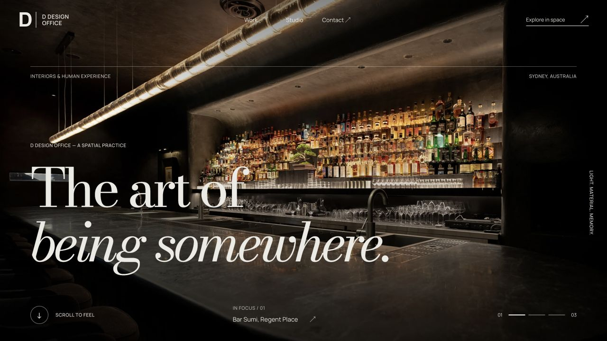
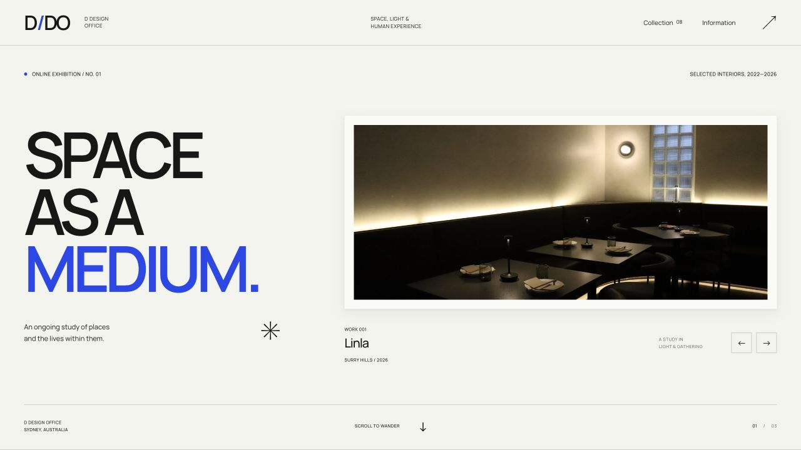
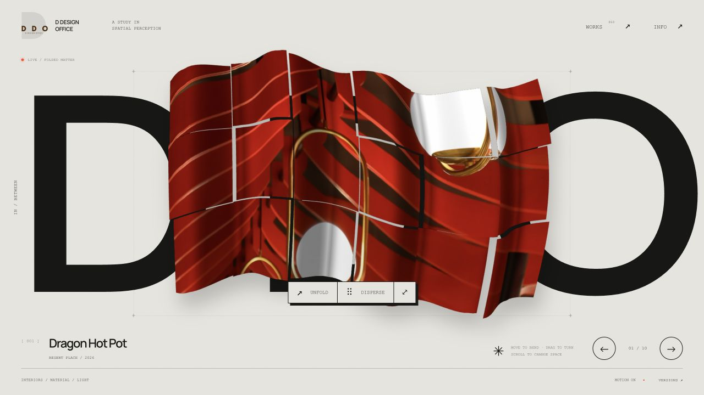
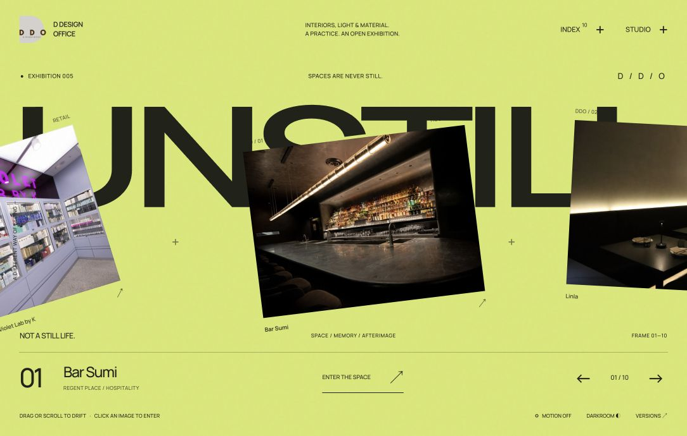

D DESIGN OFFICE / 2026.10.29
留下的版本，都在这里。
保留的设计版本各有独立固定链接，可以随时打开、比较。第三版已按你的要求移除。
四个版本 · 一键复制分享链接 ↗01 / 第一版 · 修订版固定保留

沉浸空间 · 立体档案
暖白与陶土红、大幅空间影像、衬线排版，以及可拖动浏览的立体作品展。
打开第一版↗
02 / 第二版 · 艺术馆版固定保留

Space as a medium · 线上艺术馆
现代字体、白色展墙、作品展签和独立展厅。可以逐间观看，并切换明暗灯光。
打开艺术馆版↗
04 / 第四版 · IN / BETWEEN固定保留

In / Between · 影像雕塑
只有一屏。作品随动作折叠、扭转、分解与聚合，展开后观看原作。
进入单屏实验版↗
05 / 第五版 · UNSTILL固定保留

UNSTILL · 空间底片
单屏实验影像展。拖动与滚轮让作品穿行，快门切片留下残影；进入影像后观看完整原作。
进入第五版↗